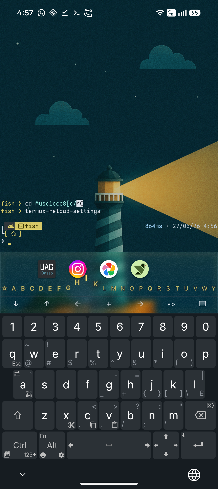
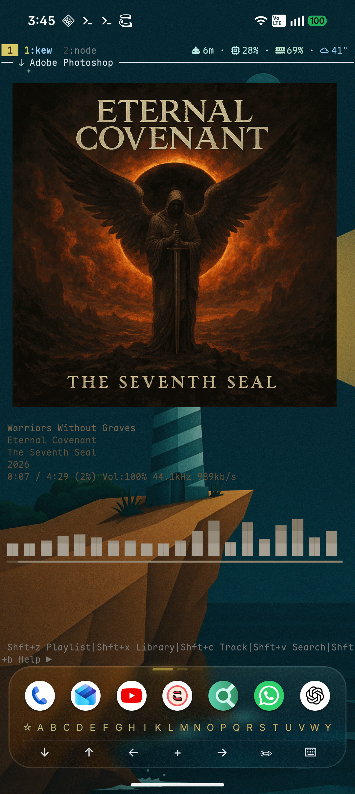
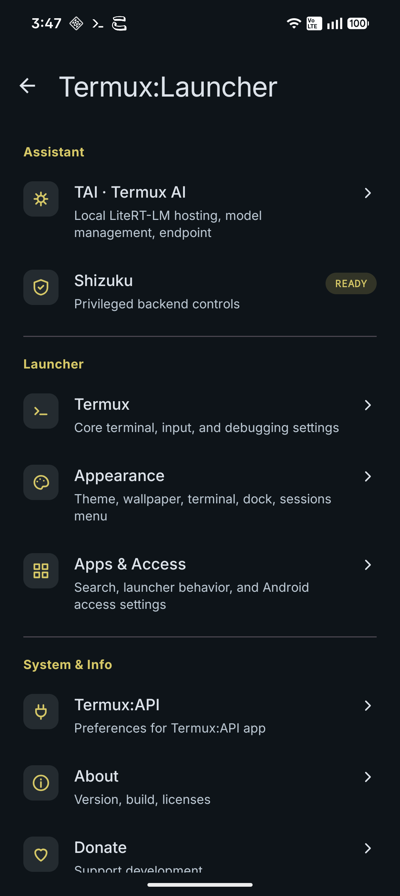
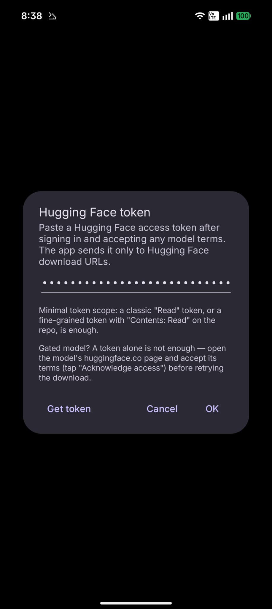
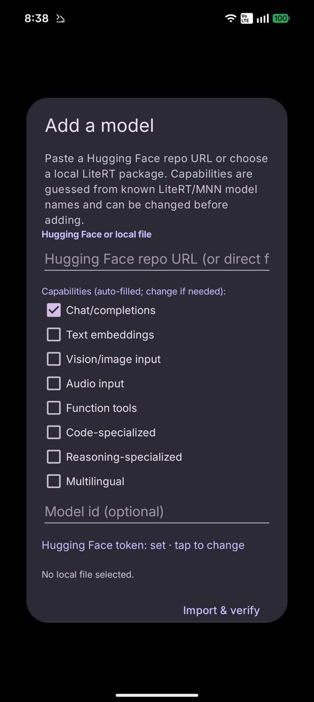
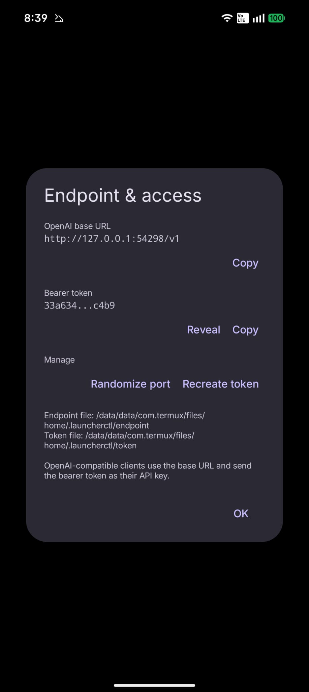

---
---
Termux Launcher — Your home screen is a terminal
~ ❯ whoami
TERMUX LAUNCHER
// your home screen is a terminal
A terminal-first Android home launcher built on Termux + Termux:Monet. Apps, search, music, live system status and on-device AI all live in and around the prompt — inspired by TEL, running as a daily driver.
⌂ A–Z app launching♫ Sixel media art▦ Live tmux status◆ On-device AI
♫Sixel media — album art rendered right in the terminal via kew.
▦Live status — CPU, RAM, battery & weather in the tmux bar.
⌂A–Z launching — swipe-to-filter, no icon grid required.
◆On-device AI — local models via TAI, OpenAI-compatible.

Home · status · dock · A–Z

kew · sixel cover art

Settings · TAI, Shizuku
⚠The com.termux build shares Termux's package identity — uninstall the regular Termux app first, or use the io.vaj.tl build, which installs side-by-side.
INSTALL3 STEPS
1
Pick a build & download the three APKs
Each build is a pack of three APKs signed with one key — the Main app plus the matching API and Styling companions. Install all three from the same pack and never mix builds or add stock Termux add-ons.
Recommended
com.termux ecosystem
Compatibility build
Uses the com.termux prefix for maximum compatibility with the established Termux package ecosystem and repos.
Launch the Main app so Termux finishes its first-run bootstrap. Wait for the fish ❯ prompt, then you're ready to set it as home.
3
Set it as your home launcher
From Android settings, or right inside the launcher:
Long press Terminal → More → Apps Bar →Set as home launcher
✓Current builds ship with Terminal Material colors on by default, so the terminal and tmux theme follow your wallpaper out of the box — no manual toggle needed.
✓ That's it — the terminal is home.
{% assign wiki_articles = site.wiki | sort: "order" %}
{% if wiki_articles.size > 0 %}
{% for article in wiki_articles %}
{% assign article_filename = article.path | split: "/" | last %}
{% assign article_key = article_filename | split: "." | first %}
DOCUMENTATION
{{ article.title | escape }}
{{ article.content | markdownify }}
{% endfor %}
{% else %}
DOCUMENTATION
No wiki pages yet
Create the first page from the content manager.
{% endif %}
TAI · TERMUX AI
Local language models, on your device.
TAI hosts models locally and speaks OpenAI- and Ollama-compatible HTTP. Your prompts and output stay on the device unless you deliberately expose the API to your network.
◆
On-device & private
Localhost bind by default. Bearer-token auth on every request.
⇄
OpenAI + Ollama
Drop-in for Codex, OpenCode, Crush, AIChat and Ollama clients.
▤
Two backends
LiteRT-LM (default) and a bundled MNN backend, routed per model.
⚙
Phone actions via MCP
Model generation and Android permissions stay separate and gated.
◐
Capability-aware
Text, image, audio, tools, embeddings — each model reports what it serves.
↥
Import your own
LiteRT-LM .litertlm/.task and MNN model directories.
Model catalog
Models aren't bundled in the APK — pull them from the in-app gallery or with tai (several GB each). Only one generation model loads at a time, inside the isolated :tai_runtime process. This is the full built-in catalog; you can also import your own.
Two backends — LiteRT-LM (Google AI Edge) and MNN. rec = recommended default · gated = accept the provider's Hugging Face terms first · import = added via the import flow, not a direct download. Multimodal LiteRT-LM models also appear as separate -vision / -audio IDs on the API.
Model
Backend
Best for
Download
RAM
Gemma 4 E2B IT · rec
LiteRT-LM
General chat · image · audio · tools
2.4 GB
8 GB+
Gemma 4 E4B IT
LiteRT-LM
Coding · reasoning · multimodal · tools
3.7 GB
12 GB+
Qwen2.5 1.5B Instruct · import
LiteRT-LM
Lightweight text · code · multilingual
1.5 GB
6 GB+
DeepSeek-R1 Distill 1.5B
LiteRT-LM
Small reasoning tasks
1.7 GB
6 GB+
FunctionGemma 270M · gated
LiteRT-LM
Function/tool selection (CPU-only)
0.3 GB
6 GB+
EmbeddingGemma 300M · gated
LiteRT-LM
Embeddings (/v1/embeddings)
183 MB
4 GB+
Qwen3 Embedding 0.6B
MNN
Embeddings (/v1/embeddings)
378 MB
4 GB+
Qwen2.5-Coder 1.5B · rec
MNN
Coding · tools · terminal clients
971 MB
4–6 GB+
Qwen2.5-Coder 7B
MNN
Higher-quality coding
4.4 GB
10–12 GB+
Qwen2.5 0.5B
MNN
Tiny general chat
557 MB
3 GB+
Qwen2.5 1.5B
MNN
Lightweight multilingual chat
879 MB
4–6 GB+
Qwen2.5 3B
MNN
Balanced multilingual chat
2.4 GB
6–8 GB+
DeepSeek-R1 1.5B Qwen
MNN
Small reasoning tasks
1.0 GB
4–6 GB+
◐About the multimodal LiteRT models. Gemma 4 E2B / E4B are multimodal, but rather than holding text, vision and audio in memory at once, TAI splits each into separate -vision and -audio model IDs that share one downloaded file. Only the mode you request is loaded at a time — a deliberate trade-off to cut RAM cost and avoid memory pressure on phones. Pick the ID matching the input you intend to send. Learn more about the backends: LiteRT (Google AI Edge) ↗ · MNN ↗ (docs)
Add & import your own models
Beyond the built-in catalog, TAI can pull any compatible model straight from Hugging Face. The suggested flow: set a Hugging Face token once, then either download a catalog entry or paste a model's repo URL into the import window. Everything runs through Settings → TAI / Termux AI.
↧Recommended: let the app download for you. Rather than fetching files by hand, just paste the model's Hugging Face URL into the import window — TAI downloads, verifies, and registers it. Browse compatible models here: huggingface.co/litert-community (LiteRT) and huggingface.co/taobao-mnn (MNN). Copy any model's page URL and paste it into Add a model.
1
Set a Hugging Face token

A classic Read token — or a fine-grained token with Contents: Read — is enough. It's sent only to Hugging Face download URLs. For a gated model, also open its huggingface.co page and accept the terms first.
2
Paste a repo URL to add

In Add a model, paste a Hugging Face repo URL (or pick a local LiteRT package). Capabilities are guessed from known LiteRT/MNN model names — tick or untick them, then Import & verify. Catalog entries download the same way; just tap one and confirm the provider terms.
3
Point your client at it

Once installed, load it (tai load MODEL_ID) and connect any OpenAI- or Ollama-compatible client with the local base URL and bearer token from Endpoint & access — the same values live in ~/.launcherctl/.
ℹSupported packages: LiteRT-LM .litertlm / .task, MNN model directories (config.json + sidecars), and LiteRT EmbeddingGemma .tflite with its tokenizer. GGUF, safetensors, PyTorch and ONNX weights are not supported — run those under a separate runtime such as llama.cpp in Termux.
Quickstart: chat from the terminal with AIChat
AIChat is the fastest and lightest way to talk to your on-device model right now — a single terminal binary, no extra runtime. It's in both this launcher's repo and the official Termux repo.
1
Install
pkg i -y aichat
2
Run & answer the prompts
aichat
On first run, AIChat offers to create a config file. Walk through it:
Choose the OpenAI-Compatible platform.
Give it any name (e.g. tai).
Paste the API base URL and API key from Settings → TAI / Termux AI → Endpoint & access — the base URL already ends in /v1, and the key is the bearer token. (The same two values are in ~/.launcherctl/endpoint and ~/.launcherctl/token.)
Prefer to write the config by hand? It looks like this in ~/.config/aichat/config.yaml:
clients:
- type: openai-compatible
name: tai
api_base: http://127.0.0.1:54298/v1 # your endpoint
api_key: YOUR_TOKEN # your bearer token
models:
- name: gemma-4-e2b-it # any installed model id
⚠Chat and coding models work well over AIChat. The embedding models are untested with AIChat's RAG features for now — treat them as experimental.
tai commands
$ tai status
$ tai models
$ tai download MODEL_ID URL --accept-terms
$ tai preflight MODEL_ID
$ tai load MODEL_ID [--auto|--cpu|--gpu]
$ tai keep-warm MODEL_ID --minutes 30
$ tai runtime
$ tai unload
$ tai delete MODEL_ID
$ tai doctor
Prefix any command with tai --json for raw API JSON you can pipe into jq and scripts. tai load, preflight, and keep-warm default to the assistant model when no ID is given. See tai --help for the full command set.
API REFERENCE
Introduction
Use TAI's local API to run and interact with models. The same server also powers launcherctl. Every route requires the bearer token.
Base URL & auth
TAI stores its current address and secret token in ~/.launcherctl/. OpenAI-compatible clients append /v1; Ollama clients use the base address as-is.
Default bind mode is localhost (127.0.0.1). LAN mode is opt-in; treat the token as a network secret when enabled. No CORS headers are emitted — browser clients can't call the API directly.
OPTIONALPOST-INSTALL
One command for the shell theme
Once you're home, recreate the opinionated workspace from the video — fish · oh-my-posh · tmux · zoxide · eza plus the Material tmux theme and the optional Shizuku btop wrapper. Terminal Material colors are already on by default, so the theme picks up your wallpaper immediately.
The script asks whether to install everything, tmux only, or btop only. Want to know exactly what it changes, plus how fish, oh-my-posh, zoxide and eza fit together? → read the shell & tmux docs
tmux keybinds
The bundled termux-launcher-tmux plugin ships Android-friendly keybinds. Forget one? There's a popup that lists every current binding:
Alt + eShow the keybind reference popup
Ctrl + Space · prefix (Ctrl + b fallback)
Alt + 1…9 · jump to window
Alt + ← / → · prev / next window
Alt + ↑ / ↓ · prev / next session
Ctrl+Alt + arrows · move between panes
F12 · reload Termux settings
Full keybind tables, themes and app-launch shortcuts → shell & tmux docs